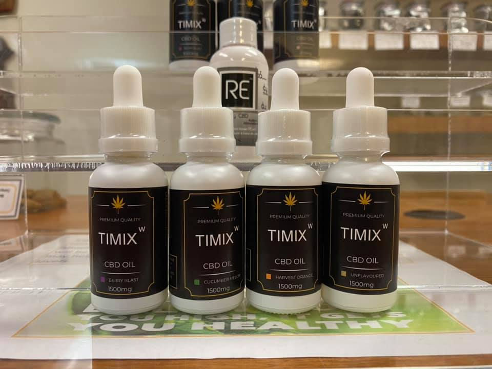

CBD, also known as Cannabidiol, is a natural compand found in cannabis. Cannabis contains 113 different cannabinoids; the most notable ones are THC and CBD. THC and CBD share a nearly exact formula, but one critical difference in their molecular structure gives each compand unique medicinal properies. For instance, unlike THC, CBD isn't psychoactive and won't make you high. Instead when ingestted, CBD not only combats the psychoactive effects of THC, but also relieves pain, reducing inflammation and beyond.
Studies indicate that CBD binds to CB1, one of your brain's endocannabinoid receptors, at a different spot fromwhere other cannabinoids normally bind to the receptor. The process, called allosteric modulation, leaves the binding site free, but changes the shape of the receptor so that it has a weaker binding affinty-rendering it less responsive.
Although decreasing your body's endocannabinoid response might seem counterintuitive, many disruptions to the endocannabinoid system actually stem from an overactive system. If you body struggles with the burden of constant anxiety, or excess weight, then your recpetors are probably being overstimulated, and CBD could give your endocannabinoid system the beak it needs.
So excited for our new Premium Quality Timixw CBD Isolate Oils. What separates this brand from the others, is that we offer some tasty flavouring to our CBD like cucumber melon, harvest orange, berry blast and just natural/unflavoured. Its not artificially flavoured they literally derived the Terpenes from the the fruits and vegetables! All natural and does wonders! I can vouch for that I am on the Berry Blast 1000mg and have noticed a difference in my mood, and not aching all over. Come check them out we also have pet CBD! Come in and ask questions, we love talking the benefits of CBD!
